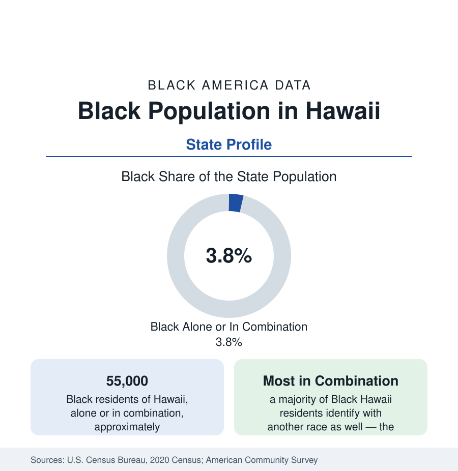

Black Census
Black Population in Hawaii: The Pacific's Military and Maritime Community
About 55,000 Black Hawaii residents — one in twenty-six — in the most multiracial state in the nation, where most Black residents also claim another race. The census profile.

Hawaii holds about 55,000 Black residents counted alone or in combination — roughly one in twenty-six of its people — with Black alone at about 24,000, or 1.6 percent. No state's Black data work quite like Hawaii's: the nation’s most multiracial state counts most of its Black residents in the 'in combination' column, its Black community was built by the maritime trades and then the United States military, and its most famous son — born in Honolulu in 1961 — became the first Black president, raised in a family and a state whose racial composition this article describes.
The Maritime Layer
Black Hawaii begins with the ships. Black sailors and stewards worked the Pacific trade from the late eighteenth century, and a small number settled: Anthony D. Allen, an African American from New York who arrived in 1810, became a prosperous Honolulu landholder, tavern keeper, and steward to the royal household — the most prominent Black resident of the kingdom era — and a small Black community persisted through the nineteenth century around the port, the whaling fleet's wintering, and the kingdom's cosmopolitan court. The plantation era added little (Hawaii's labor importation drew from Asia and the Pacific by design), so Black Hawaii remained a maritime and service community of hundreds into the twentieth century — until the military made it thousands.
The Military State
The modern Black population is a garrison population above all. Oahu's installations — Joint Base Pearl Harbor–Hickam, Schofield Barracks, Marine Corps Base Hawaii at Kaneohe, Fort Shafter, Tripler Army Medical Center — make Hawaii one of the most heavily militarized states in the union, and the services' Black personnel, families, and retirees form the large majority of the state's Black residents. The geography follows the bases: the largest Black populations sit in the communities around them — Wahiawa and Mililani near Schofield, Ewa Beach and Kapolei in the southwest growth corridor, Kailua and Kaneohe on the windward side, and Honolulu's Kalihi and Moanalua districts — with the neighbor islands' Black populations in the hundreds. The composition is correspondingly distinctive: young, employed at federal rates, highly mobile (the census's residence-a-year-ago data show among the highest churn of any Black population in the reference), and substantially composed of families who will leave — alongside a retired and rooted layer, Hawaii's ' kamaaina' Black community of long standing.
The Multiracial Arithmetic
Hawaii's census arithmetic is its own subject. The state records the nation's highest multiracial share, and its Black population exemplifies the pattern: residents identifying as Black in combination with another race (Native Hawaiian, Filipino, Japanese, white, and others) outnumber those identifying as Black alone by a wide margin — the reverse of the mainland pattern, where alone predominates. The 'in combination' figure is therefore the honest headline for Hawaii, and the alone figure alone would understate the community by more than half. The Obama family's configuration — a Kenyan father, a Kansan mother, a Honolulu childhood among the state's mixed communities — is the famous instance of a composition the census counts in the tens of thousands, including a substantial population of Black-Pacific Islander and Black-Asian children in the Oahu school data.
Indicators and Change
The indicators carry the military signature: employment and incomes anchored to federal scales, poverty below what the state's civilian economy alone would produce, educational attainment lifted by the services' education benefits and the University of Hawaii's orbit, housing costs — the state's defining economic pressure — borne by the military population partly through housing allowances and by the civilian Black population in full, in the state's severe affordability data. The estimates show the Black population tracking force levels more than migration trends: stable to slowly growing, its civilian-rooted share rising gradually as retirees and second-generation families accumulate.
Reading the Hawaii Numbers
Hawaii's profile closes the western arc of this section: a Black community carried across the Pacific by sail and then by service, counted mostly in combination in the most blended state in the union. Its 55,000 residents are the smallest complete profile in the reference's Pacific file — and the clearest demonstration that the 'alone or in combination' convention is not a technicality but, in places, the whole story.
More in Black Census
The Black Population of the United States: Size, Definitions, and Distribution
The Black population of the United States totals 52.8 million — 15.4 percent of the nation. How the Census Bureau defines and counts the population, and where it lives.
Black Median Household Income in the United States
Black median household income stands at $56,490 in the Census Bureau's annual income report — how the figure is measured, how it compares, and what drives it.
The Black Poverty Rate: Levels, Children, and the Long Trend
The official Black poverty rate is 17.1 percent — against 11.1 percent nationally and 7.7 percent for non-Hispanic White Americans. How poverty is measured and what the data show.
Source: U.S. Census Bureau, 2020 Census; American Community Survey; Population Estimates Program.